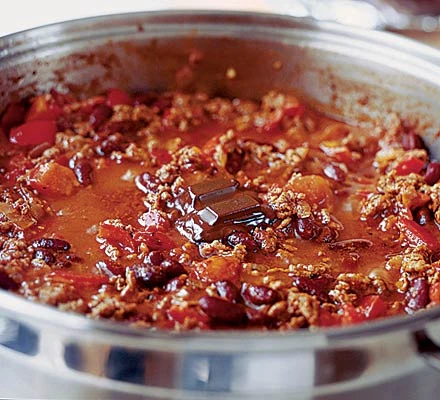

Chilli Con Carn

Chilli con carn is a great hearty dish. It is quick and easy to make and can be made in as big a small a batch as desiered. This makes it an excelt dish for cold nights or big get togethers.
Ingrdints
- 1 large onion
- 1 red capsicum
- 2 garlic cloves
- 1 tbsp oil
- 1 heaped tsp hot chilli powder
- 1 tsp paprika
- 1 tsp ground cumin
- 500g beef mince
- 1 beef stock cube
- 400g can chopped tomatoes
- 1/2 tsp dried marjoram
- 1 tsp sugar
- 2 tbsp tomate purée
- 410g can red kidney beans